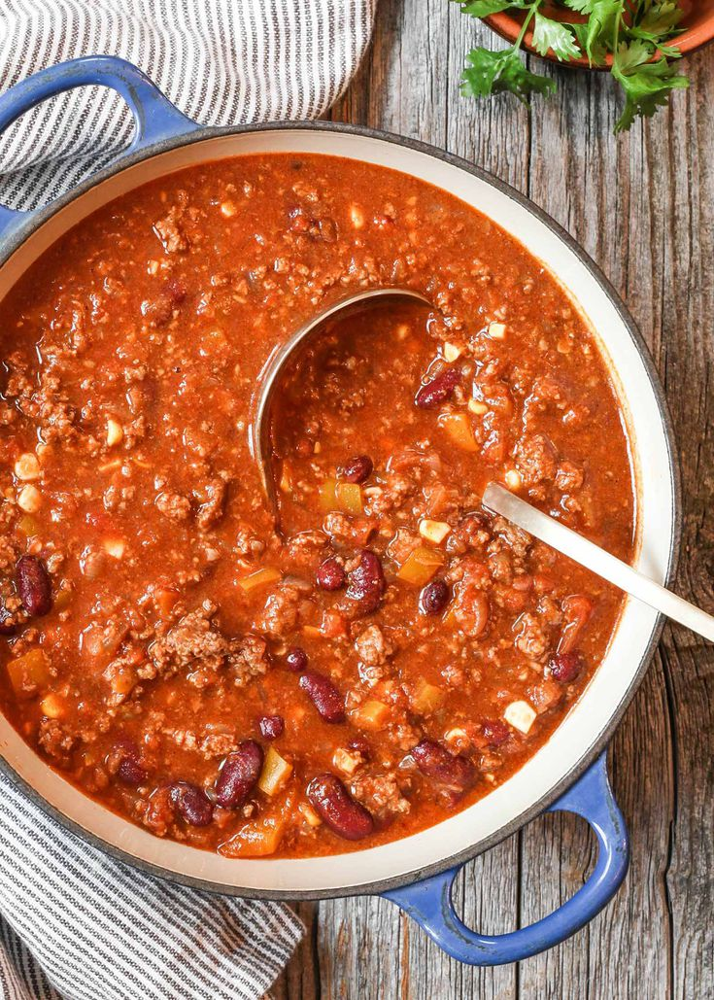

Chili

Description
Chili has no beans. A "chili" with beans deserves severe criticism, or worse.
Ingredients
- 1 tablespoon olive oil
- 2 pounds lean ground beef
- 1 white onion, diced
- 1 green pepper, diced
- 1 jalapeño, seeded and diced
- 4 cloves garlic, minced
- 2 teaspoons cumin
- 1 teaspoon paprika
- 2 tablespoons mild chili powder
- 1 teaspoon kosher salt
- 1 teaspoon freshly ground black pepper
- 6 ounces tomato paste
- 2 tablespoons cornmeal
- 1 (28-ounce) can chunky tomato puree (or diced tomatoes)
- 2 cups beef stock
Directions
-
Brown the beef in a Dutch oven with the olive oil,
for 5 or 6 minutes, until lightly browned.
- Add onions, green peppers, jalapeño, and garlic and cook them until
they soften. Add cumin, pakrika, chili powder, salt, and pepper. Stir.
- Add the tomato past the cornmeal. Stir in and cook for a few minutes.
- Add the tomates and beef stock. Use the liquid to
scrape off things stuck to the bottom.
- Bring it to a simmer and turn to low. Cook for at least ten minutes, or hours.
Check periodically. If the chili looks dry, add water.